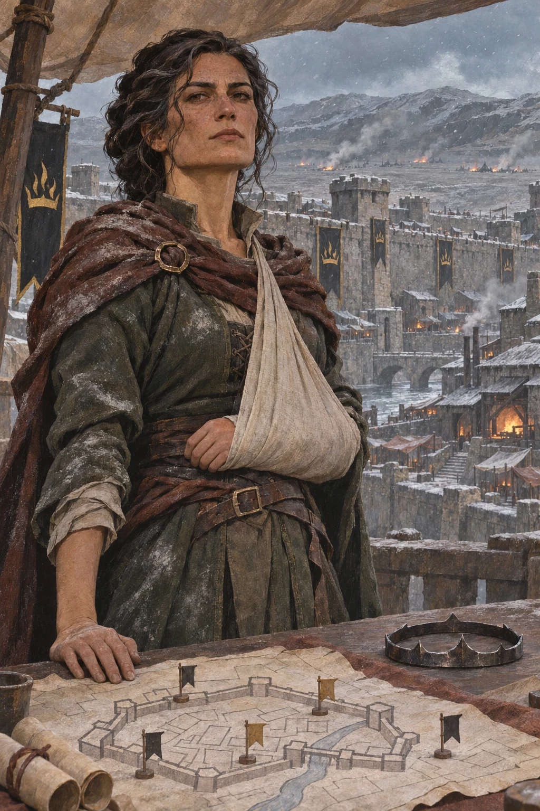

Пережить падение Восточной стены, вывести семьи Угольной слободы через Колодезный переулок и поставить Зольную баррикаду.

Ильвара ДаргетХарвен ОрстМейра РунцБорук Файн
Если партия изменила план
Если семьи вывели до обвала
Сверьтесь с записями о дворах. Уже ушедшие встречают соседей у развилки. В переулке остаются лишь те, кому действительно нужна помощь. Группа может искать отставших или идти с первой колонной.
Повороты сюжета в этот вечер
Посеять сегодня
Обруч вместо рабочих. Когда рушится башня, Ильвара сама сбегает к баррикаде из телег: «Последних принимаю я».
Утро тихое, без ветра, и в этой тишине слышно, как поёт Угольная башня: низко и ровно, будто ветер в трубе, хотя ветра нет. Из швов её лестницы течёт зола — тонкими серыми струйками на ступени, на крыши слободы, на угольные знамёна у зубцов. Голуби, которые всю осаду ночевали под её кровлей, сегодня сидят на крышах напротив. В Колодезном переулке женщины вяжут узлы, ставят их у порога и снова развязывают. Старики Угольной сотни сидят на крыльцах и смотрят вверх; один говорит соседу, что башню ставили на его памяти, на засыпке из горновой золы, и что тогда она так не пела. Собака угольщика лает на башню и не подходит к её подножию ближе чем на три двора. Пахнет сырой золой и печным дымом. Солнце медленно поднимается к полудню.
Подготовка и роли
Перелом: в полдень сцены 2 Восточная стена падает при любом значении Востока. Запишите Восток перед падением. Восток → 0 и снят; Зольная баррикада (тот же участок, Восточная стена) = 1, +1 если Восток был 2+, +1 если «Пролом» выигран по цели. «Первый прорыв», если ничего ещё не прорвано; иначе «Первым пал …, Восток — второй». Бой «Пролом у Угольной башни» (обязательный): групп 4; −1 если Восток был 2+; −1 если утром уводили в приют (Радея — без броска); не меньше 2; срок — раунд 6. Невыведенные семьи — фонари писцов, цена исхода. Лента («Сумка гонца») видна всем; к сумке ночью не подойти — Вдова бьёт по пролому; сумку берут на рассвете вечера 5. Ночь 4: Вдова — Баррикада, Ворчун — Рынок, Жаровня — Ворота (молчит, только если раму сбили в вылазке), штурм — Баррикада; на 8 игроков второй штурм — Рынок (цель Ворчуна). Ориентиры: ровная игра — Восток 3, Баррикада 3; всё на ворота — Восток 0, Баррикада 2; низ брошен — Восток 0, Баррикада 1 и к утру прорвана.
Радея Сажень: с перевязью узелков-имён утром уводит семьи слободы в приют без броска, и в «Проломе» нужно на одну группу меньше.
Вонда Кресс: старшая резерва ведёт людей через Колодезный переулок и решает, держать развилку или спасать упавшего.
Демек Харр: зачёркивает Восток на схеме и рисует Зольную баррикаду — решает, какую часть города он отдаёт ради жителей.
Сцена 1 · 40 минут
Поющая башня
Колодезный переулок так узок, что двое с узлами в нём едва расходятся, а другой дороги из слободы в город нет. На развилке, у старого колодезного сруба, из которого вся слобода берёт воду, угольщики составляют на землю котлы, кочерги, мешки с инструментом — и садятся рядом, никуда не трогаясь. Башня гудит так, что в срубе мелко дрожит вода. Над крышами нависает стена, серая от золы. Пожилая угольщица ставит на крыльцо медный котёл, упирает руки в бока и смотрит на вас снизу вверх: «Здесь мой дед строил. Куда нам — на ваши ступени?»
Утро. Колодезный переулок под стеной, зола на крышах, знамя Угольной сотни на гребне обвисло. Башня гудит. Угольщики выносят из домов котлы и инструмент, ставят у порогов и сами не уходят. Семьи: «Здесь дед строил. Куда мы — на ступени?» Радея Сажень может сказать: «Я записываю имена, а не дома». Харвен, пробегая к воротам, бросает через плечо: «Сотни стоят, пока стоит стена. Людей уводите вы». Мейра присылает телегу под стариков: «Грузите стариков. Кто сел — тот в списке». Стол решает: увести семьи в приют у Коронного двора сейчас — тогда в «Проломе у Угольной башни» на одну группу меньше; или держать людей дома, а сотни на стене. Напомните вслух: сколько знамён на Востоке сейчас, столько будет перед падением; два и больше — Баррикада +1 и ещё одной группой меньше. Свист камня Вдовы, с зубцов летит зола. Знамёна сейчас не двигаются.
Выборы — и что будет дальше
Увести семьи в приют Радеи сейчас: в «Проломе» на одну группу меньше.
Семьи уводят в приют у Коронного двора сейчас, пока башня ещё стоит. Угольщики ставят котлы и инструмент у порогов и уходят; кто-то не оглядывается, кто-то оглядывается и плачет. В приюте записывают имена, а не дома. Харвен, пробегая к воротам, бросает: «Людей уводите вы. Сотни стоят, пока стоит стена». В проломе потом придётся вывести на одну группу семей меньше.
Оставить семьи дома и держать сотни на стене до полудня.
Семьи остаются дома, сотни — на стене. Угольщики сидят у порогов на своих узлах и слушают, как гудит башня. «Здесь дед строил. Куда мы — на ступени?» — говорит старуха у колодца. Её не уговаривают. Если на Востоке к полудню два знамени и больше, сотни отойдут вместе с людьми. Но в проломе выводить придётся всех, кто не ушёл утром.
Поставить пару в переулке у колодезной развилки заранее.
Пару ставят у колодезной развилки заранее, пока башня ещё поёт. Двое стоят среди узлов и котлов, запоминают, где крыльца, где проулки, где сруб колодца. Когда стена рухнет, им не придётся бежать сюда сквозь пыль — они уже на месте. Старик с котлом ставит рядом табурет: «Садитесь, пока не началось. Потом не присядете».
Взять у Мейры телегу и людей под стариков.
Мейра присылает телегу и двух рыбаков. Стариков слободы грузят под руки, и рыбак повторяет её слова, как присказку: «Грузите стариков. Кто сел — тот в списке». Телега скрипит по Колодезному переулку к приюту. Когда начнётся пролом, на этих людей уже не придётся тратить ни рук, ни времени, и развилку можно будет держать за тех, кто остался.
Проверка и путь без броска
Убеждение Сл 12 — семьи уходят в приют до полудня, в «Проломе» на одну группу меньше. Без броска — Радея Сажень с перевязью имён: узел за каждое имя, и семьи идут за ней.
Если не получилось
Узлы собраны и стоят у порогов, но семьи остаются дома — скидки в «Проломе» нет. Старик Угольной сотни: «Как стена скажет, так и пойдём».
Сцена 2 · 40 минут
Полдень
Полдень приходит со свистом. Камень Вдовы бьёт в Угольную башню, и на миг кажется, что ничего не случилось. Потом башня начинает оседать — медленно, почти бережно, как старик опускается на лавку. Гребень над Колодезным переулком проваливается следом, и над слободой встаёт столб золы выше любой крыши. Зола ложится на лица и плечи, в ушах звенит, где-то рядом выкрикивают имена, и кто-то отвечает. Когда пыль редеет, у подножия груды камня белеет край чужой ленты. А по свежей осыпи, цепляясь за глыбы, уже карабкаются люди в серых куртках с молотом на груди.
Полдень. Сотни на гребне стоят, как стояли утром. Свист камня Вдовы — удар. Угольная башня садится в засыпку медленно, как человек на колени; гребень рушится на западе Колодезного переулка, над слободой встаёт столб золы. Угольные знамёна уходят вниз вместе с камнем; зола ложится на лица, на зубцы уцелевшей стены, где-то выкрикивают имена. Скажите вслух: «Восток — прорван. Первый прорыв». Если раньше пал другой участок: «Первым пал Камыш. Восток — второй». Восток уже 0: «Восток пал ещё ночью; теперь садится башня». На схеме: Восток 0, участок снят; Зольная баррикада 1, ещё +1, если на Востоке перед падением было два знамени и больше: «Сотни отошли вместе с людьми». Под обломками у подножия белеет лента гонца. По осыпи уже лезут штурмовики в серых куртках с молотом на груди. Харвен с обломка: «Все, кто есть, — в Колодезный!» Ильвара Даргет, с обручем у пояса, сбегает к баррикаде из телег: «Последних принимаю я».
Выборы — и что будет дальше
Решить, кто ведёт семьи по переулку, а кто держит развилку.
Едва оседает пыль, отряд делится: одни ведут семьи по Колодезному переулку к баррикаде из телег, другие держат колодезную развилку. Штурмовики уже лезут по осыпи. Ильвара у баррикады принимает людей и считает вслух: «Последних принимаю я. Всех». От того, кто где встал, зависит, сколько групп семей успеет пройти за баррикаду, прежде чем в пролом войдёт гвардия.
Лезть к белой ленте под живую осыпь или оставить её до утра.
Белая лента гонца белеет под обломками у подножия башни. Лезть к ней сейчас — значит лезть под живую осыпь, мимо штурмовиков, с риском не вернуться. Харвен кричит с обломка: «Все, кто есть, — в Колодезный! Бумага подождёт, люди — нет!» Если ленту оставляют до утра, часовой маршала стережёт её всю ночь, но сумка никуда не денется.
Послать к Мейре за телегами для баррикады.
К Мейре бегут за телегами. Через четверть часа по Колодезному переулку грохочут сгоревшие и целые телеги, и рыбаки ставят их поперёк улиц слободы. Баррикада растёт на глазах. Мейра приходит сама, с ложкой за ухом: «Телеги — не стена. Но за ними можно стоять». Когда начнут выводить людей, за баррикадой будет куда их принимать.
Проверка и путь без броска
Внимательность Сл 10 — на сумке под лентой печать маршала: так ходят гонцы с бумагой к подписи. Без броска — ленту видят все; до сумки сейчас не добраться: осыпь живая, по ней идут штурмовики.
Если не получилось
Печать не разглядели — вечером у баррикады Борук говорит: «Белая лента — канцелярия». Если Борук не укрыт, то же вспоминает Ильвара: бумагу к подписи несёт гонец под белой лентой.
Сцена 3 · 40 минут
Пролом у Угольной башни
В переулке зола по щиколотку, над обломками стелется дым. Люди идут к развилке с узлами на плечах, держась друг за друга; кто-то несёт на спине старика в овчине. С запада, с осыпи, спускаются серые куртки штурмовиков, а посреди переулка, у колодезного сруба, встаёт гвардеец маршала в сером плаще, с высоким щитом, и повторяет ровным голосом: «Дорогу знамени. Дорогу знамени». За развилкой, на баррикаде из телег, стоит Ильвара Даргет с железным обручем у пояса — за всю осаду она так ни разу его и не надела — и машет людям: «Ко мне! Всех приму!» Над переулком снова свистит камень.
Колодезный переулок, зола по щиколотку, над обломками дым. С запада, по обломкам башни, идут штурмовики Риорда; гвардеец маршала держит середину у колодезного сруба и повторяет одно: «Дорогу знамени». Бой «Пролом у Угольной башни». Колодезная развилка — столбцы I–N: в конце раунда, если там на ногах двое героев и восточнее нет врага, одна группа семей проходит за баррикаду. Нужно 4; −1, если на Востоке было два знамени и больше; −1, если утром уводили в приют; не меньше 2. Срок — конец раунда 6: потом через пролом идёт гвардия. Старуха с крыльца: «Ещё две семьи в доме у колодца!» Ильвара за баррикадой принимает людей: «Всех. Я считаю». Камень Вдовы свистит над переулком и падает в пустые дворы. Упавших выносят свои; выведенные группы отмечайте мелом. Итог вслух: «Баррикада — 1, +1 за выведенных, +1 за знамёна до падения».
Выборы — и что будет дальше
Держать развилку двумя героями или бросить одного к упавшему.
Развилку держат двое, и группы семей одна за другой проходят мимо колодезного сруба к баррикаде. Но кто-то из своих падает в золу. Бросить к нему одного — значит оставить развилку в одиночку, и семьи встанут. Старуха с крыльца кричит: «Ещё две семьи в доме у колодца!» Каждый выбор здесь оплачен чьим-то временем, а мел на баррикаде считает выведенных.
Прикрыть крыльца в ряду 5 от обхода штурмовиков.
Крыльца у колодца прикрывают от обхода: штурмовики лезут через дворы, чтобы ударить по семьям сбоку. Кто-то встаёт у крайнего крыльца и держит проход между домами. Старик в дверях подаёт ведро с горячим пеплом: «Плесните им под ноги. Пусть не лезут к детям». Семьи идут дальше, а обход захлёбывается в узком проулке между заборами.
Уводить отряд за баррикаду раньше раунда 6, если группы уже вышли.
Группы семей уже за баррикадой, и отряд отходит раньше, чем в пролом войдёт гвардия. Гвардеец у сруба повторяет вслед своё: «Дорогу знамени». Ему её оставляют. Упавших выносят свои. Ильвара закрывает за последним проход между телегами: «Всех. Я считала». Мелом отмечено, сколько групп вышло, и ни одной жизни не отдано ради лишней минуты.
Проверка и путь без броска
Проверка — цель встречи: все нужные группы прошли до конца раунда 6 — «Баррикада +1», слобода выведена. Без броска: группа проходит сама, если развилка удержана; броски здесь только боевые. Лежачих не бьют, упавшего выносят свои.
Если не получилось
Вышли не все: старик Угольной сотни садится у колодца с невыведенными: «Я подожду их здесь». Отряд уходит за баррикаду; оставшиеся семьи — в слободе.
Сцена 4 · 40 минут
Зольная баррикада
Поперёк улиц слободы к сумеркам вырастает баррикада из обгорелых телег, и Зольной её прозвали раньше, чем поставили последнюю. В колёса воткнуты угольные знамёна, вокруг на узлах спят люди, даже во сне не выпуская котелков. В воздухе горечь сырой гари. У огня сидят угольщики и вполголоса пересчитывают своих по именам. Со стороны поля доносятся оклики и стук: катапульты готовят к ночи. Над грудой камня, где стояла башня, в последнем свете ещё виден белый лоскут ленты. Ильвара Даргет стоит у колеса и смотрит туда же: «Ночью к ней не подойти. А на рассвете — кто?»
Сумерки, катапульты перезаряжают. Баррикада из сгоревших телег поперёк улиц слободы, угольные знамёна воткнуты в колёса, люди спят на узлах; на схеме Восток зачёркнут, нарисована Зольная баррикада. Если вывели не всех, в слободе горят фонари писцов обоза — переписывают семьи. Борук (если укрыт) смотрит на ленту под обломками: «Он нёс бумагу к подписи». Ильвара: «К сумке пойдём на рассвете. Скажите сейчас — кто». Развод четвёртой ночи: «Рычаги Вдовы смотрят на пролом, Ворчун у Рынка, Жаровня — на ворота. Лестницы копят на осыпи». Ночью к сумке не подойти: Вдова бьёт по пролому. По порядку: «Баррикада −1 — Вдова»; «Рынок −1 — Ворчун»; «Ворота −1 — Жаровня» (0, если там герой или раму сбили в вылазке); штурм на Баррикаду — пара 0, один −1, никого −2; починка +1 (+1 с парой на Мастерских); отвод; пары вне штурма — «Посты без штурма». «Утро: …» и одна фраза о слободе.
Выборы — и что будет дальше
Расстановка: пара на Баррикаду под штурм или риск «−2, никого».
На Зольную баррикаду ставят пару — или рискуют оставить её без героев. С парой штурм с осыпи отбит у колёс сгоревших телег, и угольные знамёна стоят. Без неё баррикада теряет два знамени за ночь, и к утру за телегами пустеет. Старик Угольной сотни говорит, сидя на узле: «Слобода стоит, пока за ней кто-то спит. Не дайте нам проснуться без неё».
Кто на рассвете идёт за сумкой гонца, а кто остаётся на стенах.
Решают, кто на рассвете пойдёт к обломкам за сумкой гонца. Ночью к ней не подойти: Вдова бьёт по пролому. Борук, если он в городе, смотрит на белую ленту: «Он нёс бумагу к подписи. Я знаю эти сумки». Ильвара кивает: «К сумке — на рассвете. Скажите сейчас, кто». Остальные останутся на стенах, и это тоже работа.
Починка и отвод; жетон Вонды — до залпа.
Починку и отвод распределяют так, чтобы баррикада простояла ночь. Журна посылает бригаду к телегам: «Камень чинить нечего. Значит, чиним дерево». Жетон резервного двора отдают до залпа или берегут. Утром становится известно, сколько семей спит за баррикадой и сколько переписали фонари писцов обоза, если вывели не всех.
Проверка и путь без броска
Внимательность Сл 12 — сосчитать фонари писцов в слободе: столько семей ещё не выведено. Без броска — Борук считает вслух; если Борук не укрыт, считает Ильвара: она знает каждую семью сотни по старшему.
Если не получилось
Ведущий называет утренние значения и одну фразу о слободе: «Утро: на Баррикаде знамёна в золе; фонари писцов погасли — или горят до рассвета».
Сумка гонца
Под обломками Угольной башни, между камнем и балкой, белеет лента, привязанная к ремню кожаной сумки с печатью маршала. Сумка придавлена, но цела; на коже серая зола, а медная пряжка блестит, будто её начистили утром.
Что можно установить
Гонец под белой лентой шёл к Восточной калитке с подлинником полного текста пощады «для подписи целиком» для правительницы, когда башня осела и засыпала его. В сумке — подлинник «Пощады Рудному Венцу».
Получение
Ленту видят все в полдень вечера 4. Сумку достают на рассвете вечера 5: Скрытность Сл 12 мимо поста; без броска — Борук в обозной куртке («Я из обоза. За своим») или белое полотнище Оллира. Провал значит лишь, что пост видел.
Запасной путь
Тот же текст — копия Лессары в Белом павильоне. Если текста нет и к вечеру 6, Лессара отпускает пленного горожанина с копией.
Изменения после решений
Если Все нужные группы прошли в «Проломе у Угольной башни». → Слобода выведена, Баррикада +1. Если нет — писцы обоза переписывают оставшихся; слобода идёт в цену исхода как «отданный квартал».
Если На Востоке перед падением было два знамени и больше. → Баррикада +1 и одной группой меньше: «Сотни отошли вместе с людьми».
Если Борук укрыт в городе с вечера 2. → Он узнаёт ленту гонца и в вечер 5 идёт к обломкам открыто: «Я из обоза. За своим». Не укрыт — сидит у Мейры и в обломки не пойдёт.
Завершение вечера
Ночь над слободой. Там, где стояла Угольная башня, — гора камня и золы, и над ней ещё висит серая пыль. На Зольной баррикаде горят факелы, у Колодезного переулка считают выведенных — по именам, по дворам, и каждое имя кто-нибудь повторяет вслух, чтобы не забыть. Из-под обломков башни в свете фонаря белеет край ленты, и часовой маршала на уцелевшем куске гребня до утра не сводит с неё глаз. Что под ней лежит, узнает тот, кто первым дойдёт туда на рассвете.